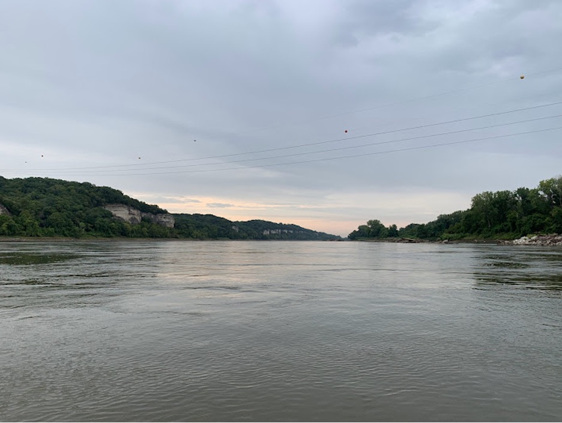
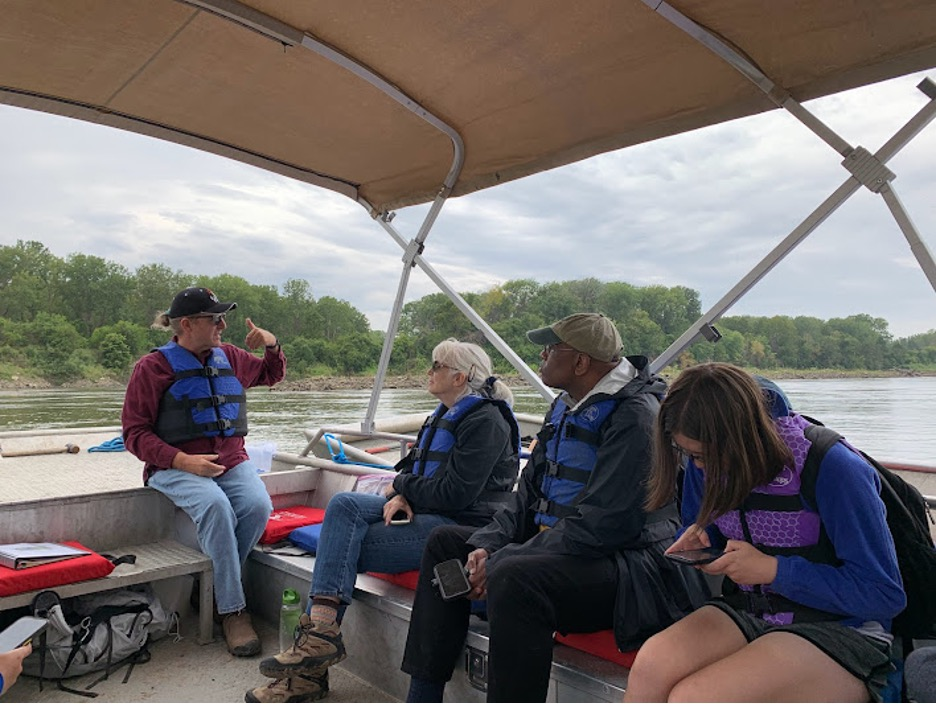
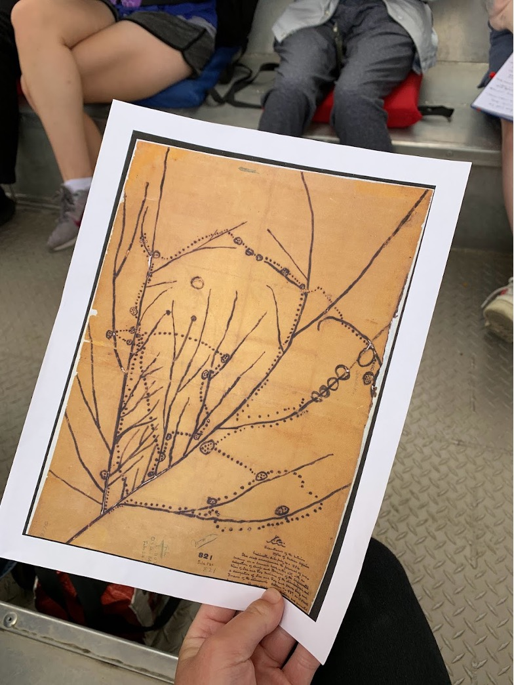
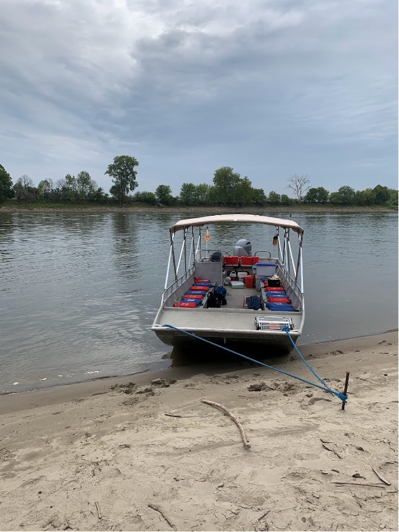
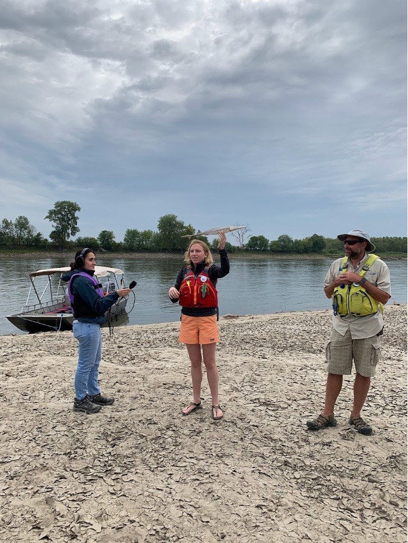

This photo gallery shows a trip on the Missouri River hosted by Missouri River Relief, a nonprofit dedicated to cleaning up and educating people about the Missouri River. The trip was organized by Professor Sara Shipley Hiles and attended by a group of about 20 MU School of Journalism students and faculty. River Relief staff educated the group about the river and its inhabitants, and guest speaker Greg Olson spoke about Native American history along the river.

The Missouri River, nicknamed “The Big Muddy,” after its once muddy waters, Friday, Sept. 8, 2023, in Huntsdale, Mo. (Photo by Joy Mazur)

MU faculty and students listen to guest speaker Greg Olson speak about Native American ties to the Missouri River. The boat trip was led by Missouri River Relief, Wednesday, Sept. 8, 2023 in Huntsdale, Mo. (Photo by Joy Mazur)

A copy of an indigenous map of the Missouri River, provided by Greg Olson, Wednesday, Sept. 8, 2023, in Huntsdale, Mo. Olson authored the recently published “Indigenous Missourians: Ancient Societies to the Present” and has written other books on the subject. (Photo by Joy Mazur)

The Missouri River Relief boat docked at a sandy wing deck, Wednesday, Sept. 8, 2023, in Hunstdale, Mo. (Photo by Joy Mazur)

Missouri River Relief staff educate students about the pallid sturgeon while an MU faculty member records audio, Wednesday, Sept. 8, 2023, in Huntsdale, Mo. The pallid sturgeon is an endangered species native to Missouri and lower Mississippi waters. (Photo by Joy Mazur)